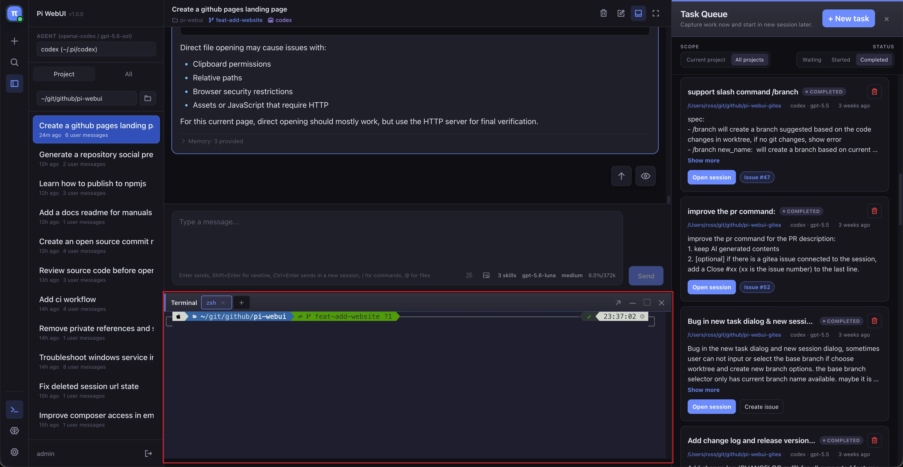

Core UI
Workspace & Rich Previews
Keep the conversation grounded in the repository with Monaco editing and an embedded terminal. Preview Markdown with outlines, Mermaid and HTML, inspect archives, and browse with file-type icons.
